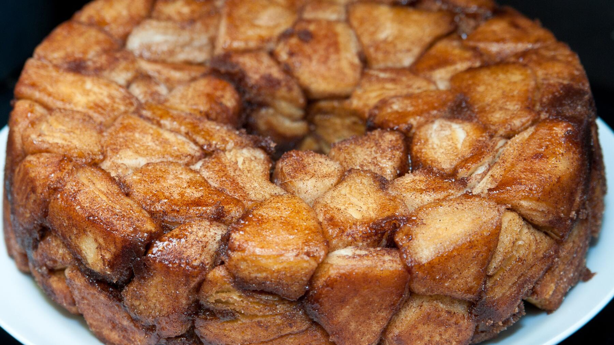

Zurück zur Übersicht
Monkey Bread
Rund 60 kleine Hefeteigkugeln, in Butter und einer Mischung aus Zucker, Nüssen und Zimt gewälzt und in der Gugelhupfform gebacken. Gegessen wird mit den Fingern. Eine Portion entspricht einer Form.
- Zeit
- 2 Std. 30 Min.
- Schwierigkeit
- mittel
- Kategorie
- Süßgebäck
- Ernährung
- vegetarisch
Zutaten
Portionen
Für den Hefeteig
- 400 gWeizenmehl Type 405
- 200 mlMilch
- 50 gZucker
- 21 gfrische Hefe
- 30 gButter, weich
- 1 PriseSalz
Zum Wälzen
- 50 gZucker
- 20 ggemahlene Nüsse (z. B. Haselnüsse oder Mandeln)
- 10 gSemmelbrösel
- 1 TLZimt
- 50 gButter, zimmerwarm
Zubereitung
- Mehl, Milch, Zucker, zerbröselte Hefe und Salz in eine Schüssel geben und mit dem elektrischen Rührgerät zu einem glatten Teig kneten. Zuletzt die weiche Butter einkneten. Mit einem Küchenhandtuch abgedeckt 1 Stunde gehen lassen.
- Zucker, gemahlene Nüsse, Semmelbrösel und Zimt mischen. 30 g Butter schmelzen, mit der restlichen Butter eine Gugelhupfform gut ausbuttern.
- Den Teig aus der Schüssel nehmen, kurz durchkneten und in etwa 60 kleine Stücke teilen. Die Stücke zu Kugeln rollen und jede Kugel zuerst in Butter und dann in der Zucker-Zimt-Mischung wälzen. Die Kugeln in die Form legen.
- Den Teig 45 Minuten gehen lassen, dann im Ofen bei 180 °C Ober-/Unterhitze 25–30 Minuten backen.
Tipp: Die Form nach dem Ausbuttern noch mit Zucker ausstreuen, dann entsteht zusätzlich Karamell.